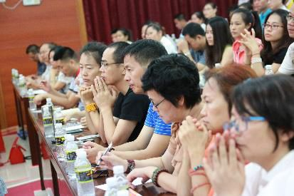
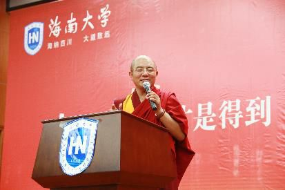

海南大学问答
『2015年6月22日』
（一）问：现在是6月份，很快就要迎来毕业季，在座的很多大学生即将步入社会。我想代表所有毕业生，请您给出一点建议。
答：很早以前，我就听说过海南大学。刚听到这个名字的时候，心里自然而然就感觉，这应该是个非常美丽的地方，什么时候能去参观一下。不过当时还没想过，会有机会跟大家进行内心的交流。
可能因为我喜欢读书，对大学生总有一种尊敬之心，对大学校园也有一种向往之心。虽然到了今天这个时代，大学生也许不算特别稀有，不像上个世纪七八十年代，人们看到一个大学生都非常惊讶——记得当时在我家乡，两个公社只有一个大学生，每次他放假回家，全村的人都去看，“哇！我们的大学生回来了。”这个时代不会这样，大家可能觉得大学生也没什么了不起的，但我仍然认为，大学生活对一个人的人生有着重大的意义。
所以，在各位即将步入社会的时候，我也说一点自己的想法。
第一，希望你们能怀抱美好的梦想。在选择工作、家庭、未来方向的时候，都朝着这个梦想努力。
第二，抱着美好梦想的同时，也要做好最坏的打算。要想到，选择的事业不成功，破产了怎么办？选择的对象不合适，离婚了怎么办？选择的工作不理想，失业了怎么办？很多大学生刚毕业的时候容易理想化，只看好的，不看坏的，但就像我们走路，既要盯着前方的目标，也要看到路上的各种危险。
第三，你要有决心。事业可能会破产，但精神不能破产，内心要保持淡定。佛教常说平常心，这也是一种觉悟，无论发生什么，都只当是过眼云烟，一笑了之。这世界会有很多的不可预料，你需要用智慧的眼光来看待。
有了这三种准备，即便将来各有因缘，但所到之处也会变成美好的花园。否则，世间的群体不会像大学这么单纯、清净，置身其中，你不一定知道该如何应对。步入社会就像去到另一个世界，我们需要学习这个世界的各种经验。

（二）问：每个人都有梦想，但真正的成功只属于少数人，这些人的共同特点是：既有目标又执著，不达目的不罢休。请问，如何把目标与行动有机结合起来，保持做事的激情和意志，一步一个脚印地去实现人生的既定目标？
答：如何平衡人生的目标和行动，努力去做，这其中确实讲一种因缘。
在世间，很多人认为的成功，可能是有钱，有势力；但在我们佛学院，大家认为的成功可能是有修行，在思想上有一些超越的境界。所以在不同的环境，人们对成功的定义也不相同。但不管是哪一种成功，它的目标和行动应该是匹配的。同样是制定目标、付出行动，那些成功的人会有自己特殊的智慧。
有人说，创业和冒险是同义词，要想创业成功，就一定要冒险。既然如此，你就要做好承担风险的准备，很有可能在这个过程中，你会失败，会一次又一次地失败。此时就要看你锁定的目标，是不是智慧的选择。
常听人说，别人做过的事，你照着他的方式再做，不一定成功；如果你有自己的思维和智慧，在没人做过的领域，也许反而能打开局面。比如现在是因特网时代，那些有情商有智商的人，就能提前看到这一点，知道它会是将来人们关注的焦点，从而运用智慧的眼光去开发，去投资。
在佛教中有一个众所周知的说法：知道过去的事不叫智者，知道未来的事才叫智者。很多成功人士正是具备了这一点——能预见未来。他们有些是基于推测，有些可能是巧合，但不管怎样，背后肯定付出了非常多的勤奋和努力，这些努力就像滴水穿石，到最后总会得到一个结果。
所以不管你有怎样的目标，还是要努力行动。为了心中所想，持之以恒地去做，再大的事也能成，这就叫“心想事成”。当然这跟前世的因缘有关，或者今生某些方面还不够努力，也很难如愿。这些时候，虽然你有美好的梦想，但美梦尚未实现的时候，或许中途就已经醒来。
（三）问：现实生活中，一种人生态度是先做，再得到回报；另一种人生态度是先索取才去做。请问，如何把握这两种人生态度，演绎精彩的人生？
答：已经得到了，还要做什么呢？
第一种，做才是得到，这是可以的；但先得到再去做，这种人生态度，可能你有不同的理解吧。我觉得已经得到了的话，可以去做一些其他的事情，比如成了成功人士，得到很多钱；这时候可以去做心灵导师，得到很多智慧；有了这些之后，又可以去做慈善，做饶益众生的事情。
想达到目标，就去做，如果不用做就能达到目标，那要怎么做？不如去做下一个。
这可能要用你自己的方式来解释，好不好？
（四）问：如果做事不成功，该如何应对得与失？如果做事得不到领导、同事的支持，该怎么办？
答：不同境界的人，应该会有不同的应对方法。
如果你有大乘佛教的空性思想，就会知道：得也好、失也好，其实都不存在。就像著名的《入行论·智慧品》的结尾部分所说：“故于诸空法，何有得与失？”这是最高的一种境界。
当我们的思想达到这样的境界，对世界有了本质上的了解，的确会发现，今天忙忙碌碌、辛辛苦苦、认认真真寻找的一切，在实相当中根本没有发生过，既无需寻找，也不可能找到。就像空中的飞鸟，留不下任何痕迹。
所以，我建议年轻人还是要学一学佛法，即便没有时间，也可以读读《金刚经》《心经》这些短小的佛经，读的时候，心里的烦恼、浮躁、痛苦，自然而然会消失。就像《心经》所说，眼耳鼻舌身意、色声香味触法全都是不存在的，既然如此，我们又在痛苦什么？又依靠什么而痛苦？
空性思想很重要，它确实能减少很多的负面情绪。尤其在为梦想而奋斗的过程中，如果能真正懂得万事万物的本体就是空性，你会有面对得失的智慧。
而这种空性，并不是“杯里没有水”的那种空，如果不经过专业、系统的学习，恐怕很难懂得它的真实意义。但暂时来说，你也可以把它理解成“什么都不存在”的单空。
当然，有些年轻人正在全力以赴地追求事业的成功和生活的美好，听到“空”，可能会觉得“这不是一种消极和迷信吗？”会用极度排斥的眼光来看待。信与不信的确是每个人的自由，他人无权干涉，我在任何场合中也从来不要求或者提倡大家信什么，但作为一种不同的学说和智慧，你也可以对此进行分析，不要因为自己不知道、难以置信，就全部抛诸脑后、断然否定——即便要推翻，恐怕也需要具备一定的智慧。
很多时候，我们不愿意承认佛教中所讲的空性等的道理。但实际上，谁都会承认生老病死，在面对生老病死的时候，谁也都需要一些引导和关怀。
就像高考的时候，很多不信佛的人会去寺院烧香。有时候遇到这样的人，我就问他：“你平时都反对佛教，为什么今天来烧香呢？”他说：“万一佛菩萨真能保佑我呢？我还是求一下吧。实在是找不到别的关系，只能找这个关系了。”
人往往是这样，在最困难、最需要帮助的时候，可能会想起佛陀；而在成功、快乐的时候，从来也想不起。
比如当你得了不治之症，完全失去生存的希望，这个时候你也许会想：“佛祖保佑，让我多一点寿命吧，如果我能活下去，一定报答您！”
以前我就认识一个这样的人，当时医院已经给他下了病危通知，于是他一直在心里默默祈祷佛陀。后来很奇妙，不知道是佛的加持，还是自己命不该绝，他真的脱离了生命危险。病愈之后，他马上去寺院，花一百块钱给佛上了一炷高香，感谢佛祖的再生之恩，还说以后都要好好供养。（笑）
所以我们的行为也会变，有时候，连自己都难以置信。
（五）问：做才是得到，但是很多时候，做了也得不到。不是因为不努力、找借口，而是有人为的阻碍，比如上司、掌权者等等，给我们制造难题，不让我们得到。遇到这种情况该如何应对？我们还要不要坚持？
答：做了也得不到，是有这种情况。（笑）包括快乐、财富、美满的家庭等等，虽然我们一直在努力，但好像总是缺少机遇，始终徘徊不前。
其实人生就是如此。刚才的演讲中我也说了，做了，不一定就能得到，在这个过程中，看起来会有很多阻碍，来自上司、下属，或者同级的人，但实际上，也许是你自身有很多欠缺。就像演讲中提到的镜子的故事——对自己障碍最大的人，往往是你自己。
但通常来讲，为了得到想要的东西，还是要努力去做，这样即便得不到，至少你不会后悔。
谁也不敢保证，所做的事情必定会成功。尽管今天的人们为了追求各种物质，拼命在做，但如果没有一个好的因缘，还是会碰壁，会遭遇种种阻碍。这个时候，有没有必要继续呢？我的想法是，除了努力，你还需要一种智慧。如果发现继续下去将无路可走，也可以退出；但除此之外，立下的誓愿最好不要轻易放弃。只要还有希望，就坚持，坚持到一定的时候，也许会做出感天动地的事迹，也许会出现意想不到的转机。
当然，这些也不是必然的。我们所得到的，的确跟我们的勤奋有关；但并不是每一个勤奋的人，都能百分之百地得到。这中间有非常复杂的因缘，解释这一道理的学说，就是因缘学。
因缘学对我们来说很重要，如果不懂其中的道理，一旦做了却得不到，就容易怨天尤人，抱怨社会、抱怨家庭。
我听过一些大学生的抱怨：“为什么我家这么穷，别的同学都穿名牌，我的父母却什么都买不起，我怎么这么倒霉！”
其实没什么好抱怨的，一切都是因缘。没有的因缘强求不来，已有的因缘也是积聚之法，迟早又会消散。所以暂时得不到的时候，应该随缘，然后继续努力。
（六）问：在孩子正处青春叛逆期的时候，怎样告诉他“做”这个看上去简单、却非常深奥的道理？
答：现在孩子所受的教育，大部分来自学校，来自父母的比较少，不像以前的人，会对孩子有一种特殊的教育。在中国的历史文献中就能看到，古代有很多母亲，为了教育孩子，自己是不出去工作的，包括今天的韩国和日本也是如此。因为母亲是孩子的第一个教育工作者，一定要陪在他身边，输送正确的观念。
但现在从幼儿园、小学开始，孩子的教育基本上都交给了老师。有些学校的环境比较复杂，待久了之后，受到的正面教育比较少，负面影响反而比较多。再加上这个时代，充斥着各种信息，很多孩子不喜欢读书，该看的不看，不该看的却沉迷其中。
我看到不少孩子喜欢拿着父母的手机玩，上网、刷屏、看动画，其实里面的很多内容都不健康。五六岁到十三岁，是记忆力最好的阶段，这个时期接触到的任何知识，都会对人的一生产生深远影响，形成他最主要的思想观念。而现在的很多知识，都是人为制造出来的，为了各种目的，想方设法吸引孩子的心识，这很糟糕。
所以在孩童时期，父母就要给与正确的引导；到了叛逆期，则要注意教育的善巧。否则，该管教的时候没有管教，等孩子长大了，又管教得特别严厉，效果可能适得其反。
每个父母都应该关注孩子的心理健康。孩子的性格、特点各不相同，可能要根据具体情况来确定适合的方法。
（七）问：儒教与佛教的最大区别在哪里？
答：佛教和儒教的区别，第一个是，儒教主要讲我们这一世的为人处世、待人接物，包括孝忠礼义廉耻等等道理。而佛教不仅讲今生，更关注来世——怎样获得来世的快乐？前世的因缘又是什么？所以要讲三世因果。
第二个是，佛教讲不害众生，这个众生包括了一切人类。而在儒教思想里，跟自己相关的人，例如亲朋好友，可以保护，不能伤害，但对其他人，尤其是冤家对头，就不一定。它强调一种英雄主义，为了家族和国家的利益，可以杀人，可以在适当的时候，去战胜和征服。
第三个是，佛教的不害众生，也包括了一切动物。而儒教在特定情况下是可以损害动物的，比如为了尽孝，可以钓鱼给父母吃。但在佛教思想里，任何时候都不能杀生，要爱护动物的生命。
当然还有其他的不同点，但最主要的可能是在这些方面。
（八）问：我一直只关注自己的家人，认为君子应该独善其身。今后我应该发什么样的愿，可以培养利他的心，超越自己的小？
答：关心自己的家人是必须的，这很好，但有时候，再关心也还是会有遗憾。
在佛教看来，万法都是无常的，今天是和乐的一家人，到了将来某天又会分开。从大的无常来看，谁都逃不出生老病死，家人总会离开人世；从小的无常来看，人和人的情感怨亲不定，再亲密的关系也难免会有隔阂。
今天的社会，人们可能更需要观修无常，对家人不能太执著了。而除了家人，我们也应该关心社会，关心所有的众生，就像大乘佛教的修行——为了一切众生而成佛。
大家可能觉得成佛应该很重要。但什么是佛？并不是人们所认为的寺院里那些如如不动的造像，弥勒佛、释迦牟尼佛等，这些只是一种形象上的表示。
真正的佛，是觉悟，是人类最高的思想境界——觉悟万事万物的真理。什么时候你懂得了这个真理，你也可以成佛。
有一个电影叫《超体》，你们都看过吧。里面讲人的大脑，从百分之十、百分之二十……一直开发到百分之百的时候，会发生什么。当智慧越来越提升，到最后确实会对自己的小我、小家庭、小社会，不再那么执著，能感受到一种“同体大悲”：所有众生都有苦乐，都有生命，除了自己和家人，也要悲悯其他的众生。
这是世间对心灵的一种分析。而在佛教中，对此不仅提供了理论依据，还有真实的修持。通过修行，你会真正发现，三界轮回中有那么多众生，只执著一个小小的我，是很狭隘的。这就是大乘佛教的思想，一旦心被打开，所有的行为也会豁然开朗。
这种思想在世间的其他思想中很难找到。世间的理念通常认为，关心家人是天经地义、合情合理的。而在这之外，如果有空闲、有资源，才会去关心社会。把利他当作一种额外的付出。
学习佛法多年，每当我将大乘思想和其他的知识、学说对比，就会深深感受到，这种利他的精神和行为在整个人类历史上是非常伟大的。完全无条件、忘我地帮助众生，像帮助自己和家人一样地帮助众生，有几人能做到？
我们也看到很多慈善家，他们可能会愿意帮助自己的亲人、家族，或者向某些特别可怜的人伸出援手，但对毫无关系的陌生人，把他们当作自己的孩子一样看待——不一定能有这样的境界。
很希望你们都能学习大乘佛教的思想，它可以称为这个世界上最伟大的学说。虽然在人类历史上，也有过各种各样的利他思想，西方的、东方的，但不一定如此彻底和纯正。
社会上也有一些利他的榜样，像单位里评选的先进模范，人们对他进行颁奖和表彰，把他的事迹塑造成崇高的精神。但实际上，这也只是小范围的一种行为。
真正的利他精神，可能只存在于大乘佛法中。
也许大家分不清什么是大乘、小乘。通常谈到钱，谈到成功，大家都比较有概念，谈到大乘思想，可能就比较模糊。（笑）但人来到这个世间，还是要去寻找，为什么古今中外那么多有智慧的学者、心灵导师，都对大乘佛法交口称赞？它真是人类最高的境界吗？这些问题，值得我们思考。
（九）问：有一个很有名的故事，说和尚和屠夫是邻居，每天他们都会叫对方起床，结果和尚没有得到好的果报，屠夫反而有一个好的果报，因为和尚叫屠夫起床是去杀生，而屠夫叫和尚起床是去念经。同样在做，为什么和尚每天念经，却没有得到好的果报？到底怎样做才是正确的“做”呢？
答：谁说和尚没有得到好的果报？（笑）
这个故事，我们应该用智慧来分析。和尚叫屠夫早起杀生，屠夫叫和尚早起念经，这两个人其实都有好的果报和不好的果报。
问题里的说法，是一种片面的抉择。你可以说，和尚得到了不好的果报，屠夫得到了好的果报；也可以反过来说，和尚得到了好的果报，屠夫得到了不好的果报。因为屠夫在杀生，和尚在念经。懂得了吧？
念经肯定有好的果报，杀生肯定有不好的果报。既然这样，又怎能说和尚没有得到好的果报呢？
和尚有和尚的果报，屠夫也有屠夫的果报，但是果报中又有不同。
和尚的果报有好有坏。他每天认认真真念经，每念一部经的功德都不可思议，以此功德肯定会得到好报。还有他好心好意叫屠夫起床——也许他们关系不错，和尚只是担心屠夫睡懒觉，并没有想帮他去杀生，这个好心也会有好报。但和尚间接造成了屠夫的杀生，这方面的确有一些过失。
我们不能说他没有得到好的果报，念经的果报、好心的果报，都是好的。唯一只有造成杀生是不好的。
屠夫的果报同样有好有坏。杀生肯定有不好的果报，按照《正法念处经》的观点，杀一个众生，都会五百年堕在地狱当中。但和尚起床念经的因缘和功德，是依靠屠夫而实现的，所以屠夫也能以此得到好的果报。
他们所造的业，在佛教中就叫“花业”，花花绿绿的花，也就是说比较复杂，善业、恶业都混在一起；由此感得的果也是“花果”，苦果、乐果都混在一起。
所以很多时候，要想懂得佛法的道理，还是需要智慧观察，不能光用一句话来简单地断定。

（十）问：我们在青年、中年、老年，每个时期要做的事都不一样，都在变化。我们有没有必要随之改变自己的做法，还是应该坚持原来的做法？
答：其实随着年龄增长，我们都不得不改变。
孩童的时候，我们特别执著玩具；到了少年、青年，可能会对玩具不感兴趣，开始执著知识、感情；到了中年，可能觉得这些也没那么美好和重要，又开始执著家庭、事业；到了老年，家庭和事业也不重要了，会执著自己的健康、快乐；最后到了离开人间的时候，这一切也都是不重要的。
我们追求的很多事，其实都只是当时觉得重要而已。孩童时代，当玩具被别人抢走，你会非常痛苦；年轻的时候，当感情、家庭受到伤害，你会特别执著；但到了老年，会觉得这些就像一场梦，对你来讲都不再重要。
每个执著，都是阶段性的，随着时过境迁，你就不会再执著；但在当时当地，旁观者清，当局者迷，你可能很难自拔。所以要懂得，今天特别执著的事，到了明天再回顾，可能根本不屑一顾。
孩子对玩具特别执著的时候，在老人看来是很可笑的。同样，我们对感情、事业特别执著的时候，在一些有修证或者懂得无常观的人看来，也是跟游戏一样。在人生的不同阶段，都有不同的对境在诱惑，你要有一种淡定的智慧。很多东西，不想舍弃也是会自然舍弃的。
（十一）问：我总是不敢承诺，心灵很脆弱，非常怕。这是为什么？
答：的确有这样的综合症，也是一种恐惧症：什么事都不敢说，不敢承诺，不敢想，不敢做。始终有一种担忧、害怕，怕别人反对，怕事情做不好，怕被人说，怕出现违缘的时候无法应对，怕因为这件事引出更多的麻烦，等等。
但我觉得，该做的事情还是要承诺。承诺是一种发愿，是一个开始，有了承诺，才会有后面的行动，否则很可能不了了之。
世间任何一件比较重大的事，都需要承诺。大到国与国之间的合作，不但要口头协商，还要签订正式的文字协议；小到人与人之间的合作，包括组建家庭、开展事业，也需要一些仪式和契约；乃至个人的事情，在做之前，也最好有一个承诺。
而且，这个承诺还需要有人见证，否则只是自己心里想一下，想推脱的时候随时就推掉，这不好。承诺，最好能在别人的见证下。
有些慈善家遇到我，说想资助藏地的孩子上学，我就说：“你们这样口头表态还不行，最好能有个正式的承诺，并且落在文字上——从什么时候开始资助，采取怎样的资助方式，由谁来证明，等等。”这样才会有一种监督和动力。以后即便情况变了，心态变了，你不会轻易退缩，“我当时已经在谁谁谁面前承诺过了，如果不好好做，在他们面前会特别不好意思。”
所以承诺还是很重要的，有了承诺才会有结果。
（十二）问：做才是得到，那么在做之前，应该如何选择，又该把什么作为选择标准，是人生价值、社会利益，还是其他？另外，如果在做的过程中，发现有更重要的事想做，要如何取舍？
答：做，才是得到。“做”是大大的那个字，记住哦。（笑）
至于做什么，是实现人生价值还是社会利益，这的确重要。但我觉得更重要的，是在做任何事之前，都有一种细致的观察、评估、规划和筹备，多询问，多思考。
比如，你去开创某个业务，或者参加某个培训，都要先对那个业务和培训机构进行了解，不能人云亦云。别人一说“有个培训班，我们一起去吧”，你就说“好好好”，一说“有公司在招人，我们去应聘吧”，你也说“行行行”，结果到了那里才发现，什么意义都没有。这都是不观察的结果。
如果打算做一件事，就要先了解跟它相关的人和事，包括做这件事会花多长时间、有怎样的社会效应、个人能从中得到多少利益，还要考虑可能会出现的意外、所担心的问题会不会发生，等等。在做之前，对这些情况都应该细致、深入地分析和掌握，这非常重要。
但现在的人缺乏这一点。包括很多佛教徒，听说某某上师在灌顶，就马上奔过去，过一段时间，听说这个上师是假的，是来化缘、骗钱的，又后悔不已，“啊！我已经在他面前得了灌顶，怎么办？”
世间人也是，听说某某气功师在办培训班，号称知名教授，就都跑过去，后来发现他根本不是什么教授，才知道被骗了。这样的现象比较多。
所以对不了解的人也好、产品也好、事件也好，都应该先用一种怀疑的态度去观察。不仅自己观察，还要多问别人的意见，从各方面来了解。了解之后，再去做。
这样即便后来发现，最初的观察并不准确和究竟，自己也不会有遗憾。你可以对自己说：“虽然这件事情好像不是刚开始想的那样，但我并没有轻易地相信、盲目地判断。我已经查过相关的资料，问过其他人的看法，自己也认真思考过，即便最终还是判断失误，那可能是缘分不好，我也没办法了。”
做之前就要这样，先观察，用智慧来分析，而不是头脑简单地全部接受。
然后，关于第二个问题，如果发现了更重要、更值得去做的事，同样也要观察：自己的精力、智慧、能力等各方面，是否允许再接这件事？它有什么好处和弊端？如果方方面面都考虑过了，可以接受，才去做。
具体问题具体分析，这句话还是很有用的。我们常常自不量力，什么都想做，结果什么都做不好。藏传佛教有一句著名的格言：走路的时候，等一只脚站稳了，再抬另一只，否则，可能会把自己摔倒在地。同样，做事也要一件一件地来，等一件事做稳、做好、做踏实了，再做第二件，否则，可能会一事无成。这样循序渐进，才会有序、有效。
我自始至终觉得，做，是需要智慧的。有了智慧，你不容易后悔，事情也会按部就班地成办。
在座的大学生、老师、学者，本身素质就比较高，相信以你们的世间学识，再结合宗教方面出世间的思想，世间法和出世间法圆融无违，会让这个“做”更加圆满。